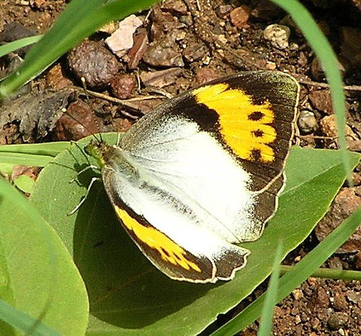

व्हाइट ऑरेंज-टिप तितलीWhite Orange-tip
Ixias marianne · Pieridae · INS-0190

- Scientific name वैज्ञानिक नाम
- Ixias marianne (Cramer, 1779)
- Family कुल
- Pieridae
- Hindi हिंदी
- व्हाइट ऑरेंज-टिप तितली
- Local names स्थानीय नाम
- white orange tip, orange tip titli, safed narangi titli, white orange-tip butterfly
- Status here यहाँ की स्थिति
- native
- Movement आवागमन
- Resident, here all year
- Known from कहाँ दर्ज
- Others have published records from the wider Awadh–Purvanchal plain, none yet from Basti–Ayodhya अवध–पूर्वांचल से दूसरों के प्रकाशित अभिलेख, बस्ती–अयोध्या से अभी नहीं
- IUCN IUCN
- not evaluated
- Review समीक्षा
- not yet reviewed
When to look कब देखें
Present all year. साल भर मौजूद।
Uses and possibilities उपयोग और संभावनाएँ
Drawn from the documented uses in the profile below, where each is labelled traditional, current or a research lead. All uses →
Tell it apart from इनसे अलग पहचानें
व्हाइट ऑरेंज-टिप तितली / White Orange-tip
Ixias marianne (Cramer, 1779) — Pieridae
व्हाइट ऑरेंज-टिप तितली — झाड़ियों, बंजर जमीनों और कटीले जंगलों में पाई जाने वाली सफेद और चमकीले नारंगी रंग की एक सुंदर तितली है। इसके अगले पंखों के छोर पर काले घेरे के अंदर आग जैसा दहकता नारंगी धब्बा होता है। यह जमीन के पास बहुत तेजी से उड़ती है और धूप सेकने के लिए सूखे काँटों पर बैठती है। इसके कैटरपिलर करील और हिंस जैसे कटीले पौधों पर भोजन करते हैं।
Quick Identification त्वरित पहचान
| Feature | Description |
|---|---|
| Size | Medium pierid butterfly; wingspan 50–55 mm (Kehimkar 2008) |
| Upperside Ground | Chalky white in both male and female (Evans 1932) |
| Forewing Apical Patch | Brilliant fiery orange patch enclosed in a broad black apical border (Bingham 1907) |
| Forewing Base | Lightly dusted with greyish-black scales near wing base (Talbot 1939) |
| Hindwing Upperside | Chalky white with a broad, sharply defined black terminal margin (Wynter-Blyth 1957) |
| Underside Colour | Bright sulphur-yellow dusted with delicate brownish strigae and ringed spots (Kehimkar 2008) |
| Flight Pattern | Swift, direct, low-bounding flight among thorny caper thickets (Wynter-Blyth 1957) |
Field tip: Look in open scrubland, degraded wasteland, and dry hedges where wild caper (Capparis) bushes grow. A medium-sized white butterfly flying rapidly between low bushes, flashing a brilliant fiery orange patch on the outer half of its forewings, is this species.
हिंदी: कटीली झाड़ियों और बंजर मेड़ों पर उड़ने वाली इस सफेद तितली के अगले पंखों के कोने पर दहकता नारंगी रंग साफ चमकता है। निचला हिस्सा पीला और धब्बेदार होता है।
Morphology आकारिकी
Biometrics recorded from adult specimens (Kehimkar 2008; Evans 1932):
| Measurement | Range | Source |
|---|---|---|
| Wingspan | 50–55 mm | Kehimkar (2008) |
Adult description: The White Orange-tip is a striking pierid butterfly displaying noticeable seasonal variation between wet-season and dry-season forms (Bingham 1907). In the wet-season form, the black markings on the upperside are deep, broad, and saturated (Talbot 1939). In the dry-season form, the black terminal borders on both wings narrow significantly, while the underside becomes densely freckled with cryptic brownish-grey strigae and small ocellated rings (Wynter-Blyth 1957).
On the forewing upperside, the basal half is pure chalky white (Kehimkar 2008). The apical half is occupied by a very broad triangular black patch that completely encloses an enormous, fiery orange-red discal band (Bingham 1907). A black discocellular bar projects into the orange patch from the costa. The hindwing upperside is pure white, bounded along the entire termen by a solid black border (Evans 1932). In females, the orange patch is slightly paler, and the inner black border often carries a series of small white or black spots (Talbot 1939).
The underside of both wings is bright sulphur-yellow in fresh individuals, fading to pale ochreous-yellow in older specimens (Kehimkar 2008). It is finely speckled with reddish-brown striae, with a small brownish ring at the discocellular vein and an irregular postdiscal row of faint brownish spots that mimic dry lichen or dead leaves when the butterfly perches with closed wings (Wynter-Blyth 1957).
Larval Stage इल्ली अवस्था
The full-grown larva is cylindrical, grass-green, and densely covered with minute tuberculated hairs (Talbot 1939). A prominent, pure white or creamy spiracular line runs down each side, occasionally bordered above with reddish-purple. The pupa is pale green or dull yellowish-brown, acutely pointed at both ends, and fastened upright against a twig by a silk girdle (Kehimkar 2008).
हिंदी: इसका शरीर मजबूत और पंखों का फैलाव 50 से 55 मिमी होता है। ऊपरी पंख दूधिया सफेद और छोर पर नारंगी होते हैं। इसकी इल्ली हरी होती है जिस पर सफेद धारियाँ बनी होती हैं।
Behaviour & Ecology व्यवहार और पारिस्थितिकी
The White Orange-tip is an active, warmth-loving butterfly of arid and semi-arid landscapes, open scrub jungle, and degraded ravine country (Kehimkar 2008). It requires intense solar radiation to maintain activity, flying vigorously throughout sunny mornings and afternoons across dry thorny fields (Wynter-Blyth 1957). The flight is rapid, low, and bounding, rarely rising more than one or two metres above ground level as the butterfly weaves between thorny bushes (Evans 1932).
Males patrol established linear territories along scrub edges and hedge boundaries, frequently engaging in aerial pursuits with rivals (Kehimkar 2008). Both sexes are eager visitors to low-growing flowers, showing marked preference for Tridax procumbens, wild brassicaceous herbs, and composite blossoms (Kehimkar 2008). When roosting or during overcast weather, the butterfly settles on dry twigs or inside thorny bushes with its wings tightly pressed together, where the speckled yellow underside renders it almost invisible against dead foliage (Wynter-Blyth 1957).
हिंदी: यह तितली कड़ी धूप में खुश रहती है और खुले कटीले मैदानों में जमीन के नजदीक तेज उड़ती है। रात में या बादल छाने पर यह सूखे काँटों के बीच पंख सिकोड़कर छिप जाती है।
Life Cycle / Phenology जीवन चक्र
Seasonal phenology in northern Indian plains across the agricultural calendar (Kehimkar 2008; Evans 1932):
| Season / Month | Stage | Field Observation |
|---|---|---|
| July–August (Kharif monsoon) | Egg & Larva | Oviposition on fresh vegetative growth of wild capers |
| September–November (Post-monsoon) | Adult peak | Wet-season brood emerges with prominent broad black borders (Kehimkar 2008) |
| December–January (Rabi winter) | Adult & Pupa | Flight continues on warm sunny days; pupae develop slowly (Talbot 1939) |
| February–April (Spring / Zaid) | Adult peak | Dry-season brood with densely speckled cryptic undersides (Wynter-Blyth 1957) |
| May–June (Pre-monsoon summer) | Adult & Egg | Highly heat-tolerant, flying during intense midday heat in scrub |
Eggs are bottle-shaped, ribbed vertically, and laid singly on flower buds, young thorns, or tender leaves of Capparis shrubs. The egg turns from pearly white to orange-yellow before hatching in a few days. The young caterpillar consumes its empty eggshell before feeding on tender shoot tips. Larval development lasts a few weeks through five instars. Pupation occurs on a sturdy thorny twig, and the pupal duration lasts about a week to ten days before adult eclosion (Kehimkar 2008).
हिंदी: साल भर में इसकी कई पीढ़ियाँ निकलती हैं। मादा कटीली झाड़ियों की कलियों पर अंडा देती है जो कुछ दिनों में फूटता है। कुछ हफ्तों में इल्ली तितली बन जाती है।
Host Plants or Prey आहार
Documented larval host plants from published Indian lepidopteran accounts (Talbot 1939; Kehimkar 2008):
- Capparis sepiaria (Wild Caper / Heens, family Capparaceae) — primary larval food plant in Gangetic scrub and field edges.
- Capparis decidua (Karira / Caper Bush, family Capparaceae) — drought-hardy xerophytic shrub utilized in dry wastelands (Kehimkar 2008).
- Capparis zeylanica (Indian Caper, family Capparaceae) — widespread thorny scrambling shrub along rural fences.
- Cadaba fruticosa (Indian Cadaba, family Capparaceae) — sprawling shrub in ravine scrublands.
- Cleome viscosa (Tick Weed, family Cleomaceae) — annual monsoon weed occasionally utilized by wandering females (Kehimkar 2008).
Adults are avid flower visitors, frequently taking nectar from Tridax procumbens (Tridax Daisy), Calotropis procera, and roadside composite flowers (Kehimkar 2008).
हिंदी: इसके कैटरपिलर करील, हिंस और हुरहुर जैसे कटीले व जंगली पौधों की पत्तियां खाते हैं। वयस्क तितलियाँ मदार और जंगली फूलों का रस पीती हैं।
Predators / Natural Enemies शत्रु
Common insectivorous predators of the Gangetic plain likely to take pierid butterflies:
- Birds: Insectivorous scrubland birds, such as green bee-eaters, black drongos, and shrikes, actively pursue adults on the wing.
- Reptiles: Garden lizards (Calotes versicolor) ambush adults while they feed on low flowering herbs or bask on warm stones.
- Insects: Robber flies (Asilidae) and ambush bugs catch adults during flight across open fields.
- Parasitoids: Pteromalid wasps and braconids parasitize the exposed chrysalis and caterpillars on caper bushes.
हिंदी: गिरगिट, शिकारी मक्खियाँ और हरियल व भुजंगा जैसी चिड़ियाँ इस तितली का शिकार करती हैं। कटीली झाड़ियों में इसकी इल्लियों पर परजीवी कीड़े हमला करते हैं।
Agricultural / Human Relevance कृषि प्रासंगिकता
Crop relationship: The White Orange-tip does not damage agricultural crops or horticultural plants (Kehimkar 2008). Its larval diet is strictly confined to wild and weedy shrubs of the caper and cleome families (Capparaceae and Cleomaceae). None of these host species are cultivated food crops in eastern Uttar Pradesh.
Pollination service: Adults are vigorous diurnal pollinators of wild flora, field-margin weeds, and rural wildflowers, supporting seed set in marginal semi-arid plant communities (Kehimkar 2008).
Traditional: No traditional medicinal uses or commercial exploitation are documented in regional records.
Today: Widely appreciated as an attractive and characteristic butterfly of dry scrub habitats and rural hedgerows.
Research direction (a lead, not a result): Investigating glucosinolate sequestration by larvae feeding on different wild Capparis species in northern India.
हिंदी: यह तितली किसी भी फसल को नुकसान नहीं पहुँचाती। यह केवल जंगली झाड़ियों पर अंडे देती है और फूलों के परागण में मदद करती है, जो खेती और प्रकृति के लिए लाभदायक है।
Expected Locally स्थानीय रूप से अपेक्षित
Not a field record. Written from published accounts for eastern Uttar Pradesh. No confirmed local sighting yet — if you have seen it, that is what the atlas needs.
अभी तक स्थानीय पुष्टि नहीं। यह विवरण प्रकाशित स्रोतों से है, किसी अवलोकन से नहीं।
The White Orange-tip is expected throughout eastern Uttar Pradesh in dry scrubby pastures, along railway embankments, on canal levees lined with thorny bushes, and along field borders where wild caper (Capparis) persists. Look for rapid white butterflies flashing fiery orange wingtips over low thorn scrub from October through April. GBIF holds published records from the wider Awadh–Purvanchal plain, none yet from Basti–Ayodhya. A photograph with date and location, submitted through the About page, would confirm the first local documentation for the district.
Distribution वितरण
Global range: Endemic to South Asia, occurring widely across India and Sri Lanka (Talbot 1939).
In India: Distributed throughout peninsular India, Gujarat, Rajasthan, central India, the lower Himalayan foothills, and across the Gangetic plain to West Bengal (Evans 1932; Kehimkar 2008).
In Uttar Pradesh: Recorded across the state in dry open woodlands, ravine habitats, and countryside retaining thorny scrub borders.
In Basti district / eastern UP: Expected as a resident breeding species in dry wastelands, pasture margins, and road verges supporting Capparis sepiaria and Capparis zeylanica.
हिंदी: यह तितली केवल भारत और श्रीलंका में ही पाई जाती है। उत्तर प्रदेश के सूखे और कटीले इलाकों में यह सामान्य रूप से देखने को मिलती है।
Research Questions शोध प्रश्न
- Which species of wild caper (Capparis) is the most heavily utilized host plant for the White Orange-tip in eastern Uttar Pradesh? / पूर्वी उत्तर प्रदेश में व्हाइट ऑरेंज-टिप तितली किस कटीली झाड़ी पर सबसे अधिक अंडे देती है?
- Does the density of wild caper shrubs along field borders directly correlate with adult butterfly abundance in rural farmlands?
- How do wet-season and dry-season forms differ in their resting camouflage efficiency against dead vegetation?
- What is the impact of summer heatwaves on the flight activity and egg survival of this species? / गर्मियों की तेज लू में इस तितली की उड़ान और अंडों पर क्या प्रभाव पड़ता है?
- Which native flowering weeds provide the bulk of adult nectar resources during the peak spring flight?
Similar Species मिलती-जुलती प्रजातियाँ
| Species | How to tell apart | हिंदी | |
|---|---|---|---|
| Ixias pyrene ([[yellow_orange_tip\ | Yellow Orange Tip]]) | Upperside ground colour is bright sulphur-yellow in males rather than chalky white | येलो ऑरेंज-टिप — पीले पंख |
| Hebomoia glaucippe ([[great_orange_tip\ | Great Orange Tip]]) | Distinctly larger; orange apical patch lacks a complete inner black border | ग्रेट ऑरेंज-टिप — बहुत बड़ी तितली |
| Cepora nerissa ([[common_gull\ | Common Gull]]) | Chalky white wings heavily lined with greenish-black veins beneath; lacks any orange patch | कॉमन गल — नसों पर काली रेखाएं |
Field rule: A medium-sized chalk-white pierid butterfly with a brilliant fiery orange patch enclosed in a broad black apical area on the forewing, flying around thorny caper scrub, is the White Orange-tip.
हिंदी: येलो ऑरेंज-टिप का आधार रंग पीला होता है और ग्रेट ऑरेंज-टिप आकार में बहुत बड़ी होती है, जबकि व्हाइट ऑरेंज-टिप के पंख दूधिया सफेद और कोने नारंगी होते हैं।
Taxonomy & Classification वर्गीकरण
Original description. Described by Pieter Cramer in [1779] as Papilio marianne in De Uitlandsche Kapellen, Volume 3, page 41, plate 217, figures C, D, E. Type locality: Coromandel Coast, India.
Subspecies. Monotypic — no distinct subspecies are currently recognized across its Indian and Sri Lankan range (Talbot 1939; Varshney & Smetacek 2015).
Family and order placement. Order Lepidoptera, family Pieridae, subfamily Pierinae, tribe Teracolini. The genus Ixias Hübner, 1819, comprises the orange-tip butterflies of the Old World tropics.
Phylogenetic notes. Ixias species are adapted to arid and semi-arid ecosystems, characterized by specialized larval food plant associations with Capparaceae and striking aposematic or disruptive apical wing patterns (Talbot 1939).
IUCN status rationale. Not evaluated (NE) on the IUCN Red List of Threatened Species. It is an abundant and widespread species thriving in disturbed and dry habitats across South Asia.
हिंदी: इसका वैज्ञानिक नाम Ixias marianne है और यह Pieridae (सफेद तितलियों) परिवार की सदस्य है। इसका अस्तित्व पूरी तरह सुरक्षित है।
Photo Gallery फोटो गैलरी
No photos yet — add field photos to media/species/white_orange_tip/ and run node scripts/sync_photos.js.
Photos needed आवश्यक फोटो
- [ ] Adult basking with wings open showing fiery orange tips (पंख फैलाए बैठी तितली के नारंगी छोर)
- [ ] Underside showing cryptically speckled yellow pattern (पंखों के नीचे की पीली और धब्बेदार बनावट)
- [ ] Larva on wild caper foliage (करील या हिंस पर बैठी इल्ली)
- [ ] Adult taking nectar at wildflower blossom (जंगली फूल पर रस चूसती तितली)
References संदर्भ
- Cramer, P. (1779). De Uitlandsche Kapellen, Vol. 3. S. J. Baalde, Amsterdam, p. 41, pl. 217, figs. C–E.
- Bingham, C. T. (1907). The Fauna of British India, Including Ceylon and Burma. Butterflies, Vol. 2. Taylor and Francis, London, pp. 196–197.
- Evans, W. H. (1932). The Identification of Indian Butterflies. 2nd edition. Bombay Natural History Society, Mumbai, p. 74.
- Talbot, G. (1939). The Fauna of British India, Including Ceylon and Burma. Butterflies, 2nd edition, Vol. 1. Taylor and Francis, London, pp. 440–443.
- Wynter-Blyth, M. A. (1957). Butterflies of the Indian Region. Bombay Natural History Society, Mumbai, pp. 439–440.
- Kehimkar, I. (2008). The Book of Indian Butterflies. Bombay Natural History Society and Oxford University Press, Mumbai, p. 182.
- Varshney, R. K. & Smetacek, P. (2015). A Synoptic Catalogue of the Butterflies of India. Butterfly Research Centre, Bhimtal and Indinov Publishing, New Delhi, p. 75.
- GBIF Occurrence Data — Ixias marianne, India (2025).
Source file: species/fauna/insects/white_orange_tip.md